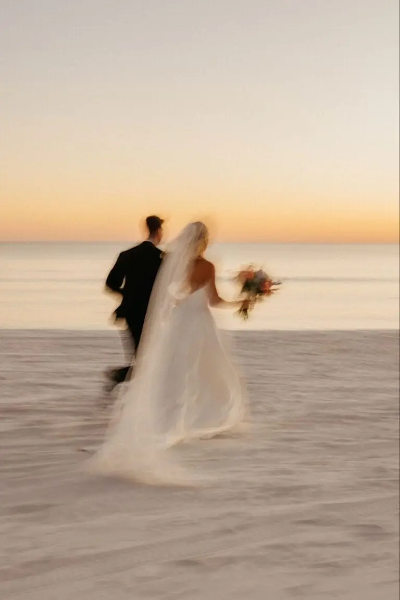
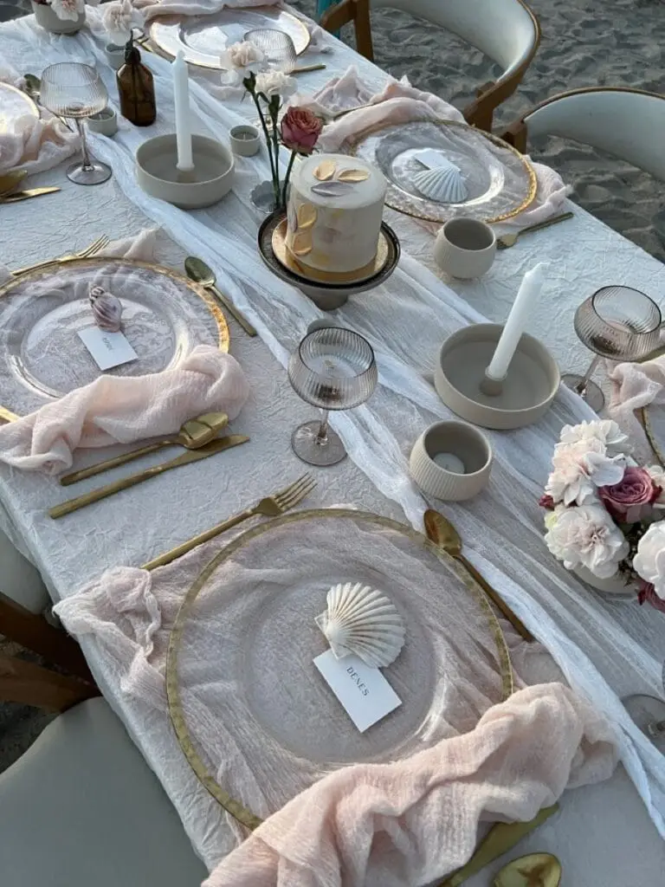
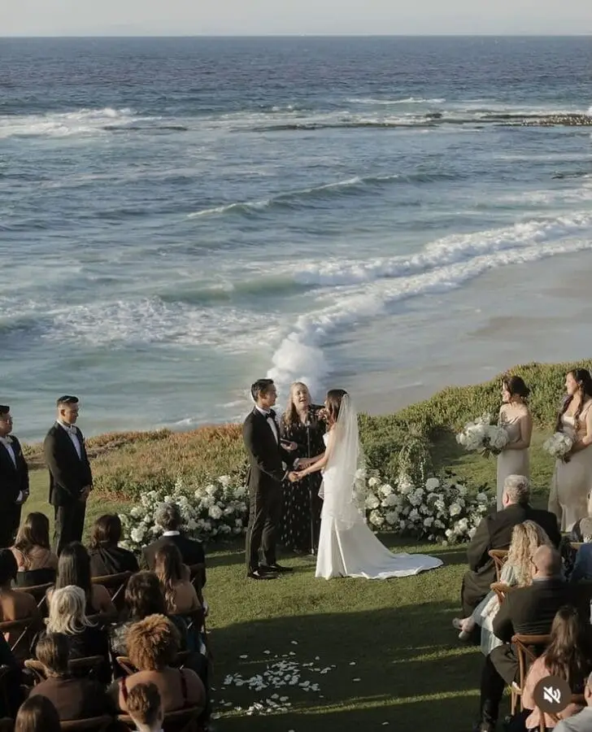
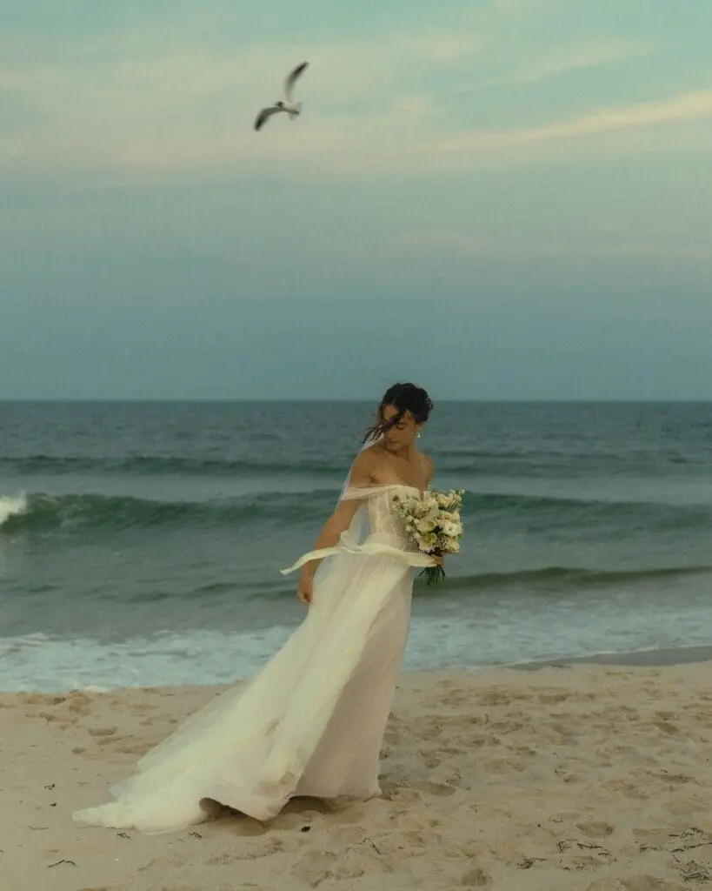
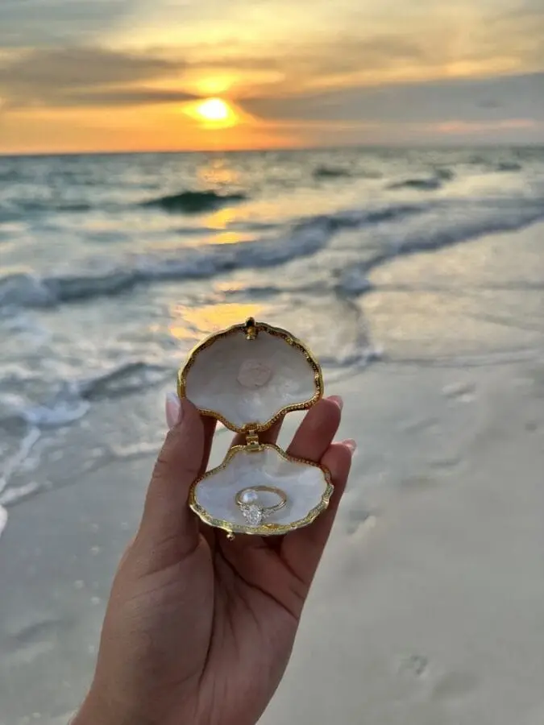
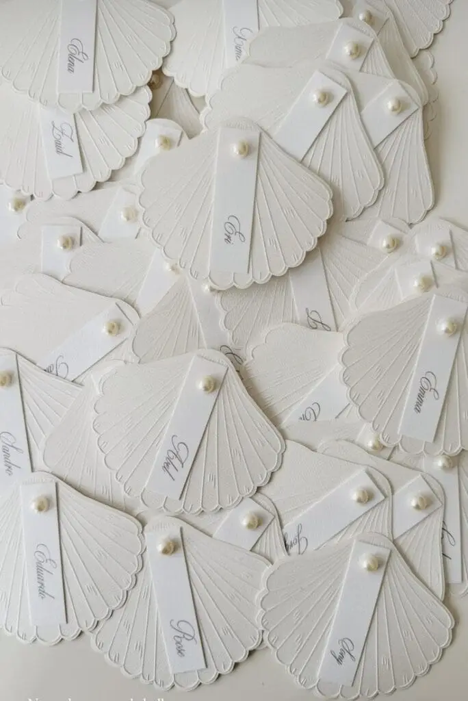
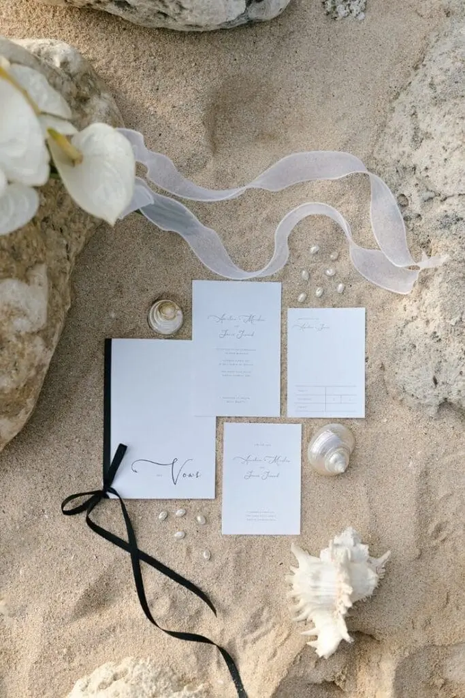
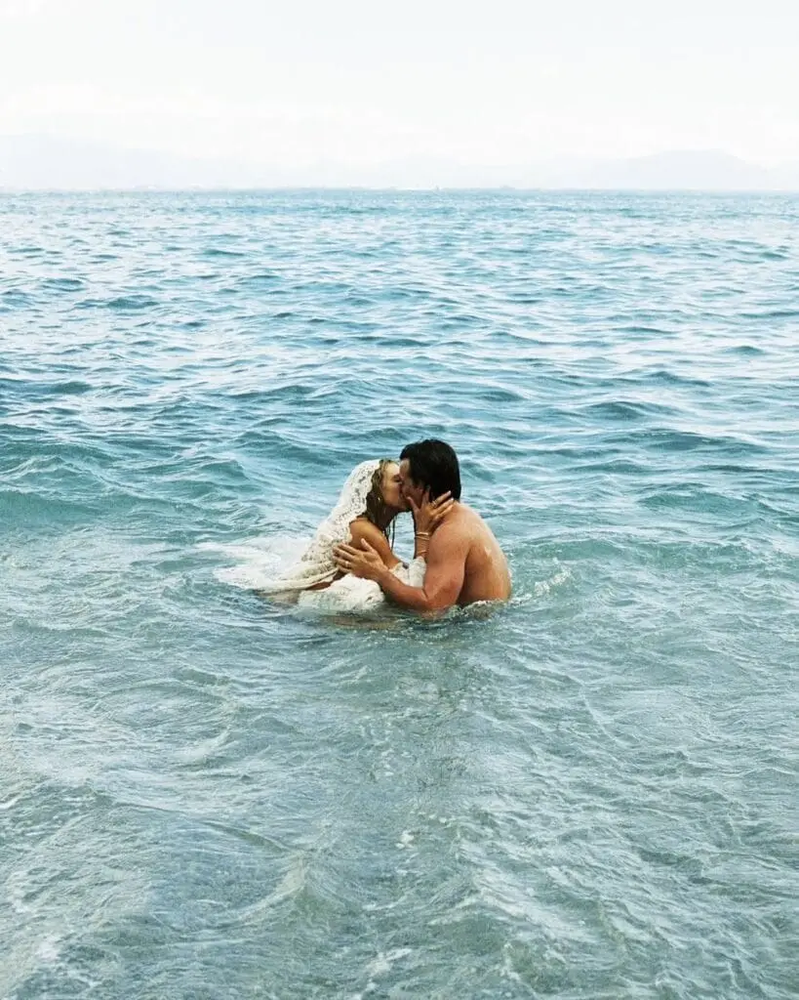

Getting married by the beach remains a dream for many couples. Fine sand underfoot, the soothing sound of the waves, the salty scent of the sea and the sunset on the horizon create a romantic, natural and unique atmosphere that turns a wedding into a memorable experience. It is this magical setting that makes so many couples dream, and that inspires unforgettable photographic memories, both intimate and spectacular.
But today, organising a wedding directly on the sand is not as simple as it was a few years ago. New local regulations, environmental protection requirements and safety measures have been introduced to preserve the coastline and regulate events on public beaches. These constraints may seem restrictive, but they are essential to protect natural spaces, respect local residents and guarantee guests' safety.
Between municipal restrictions, protected areas, regulated hours and noise limits, many couples now face logistical challenges. Fortunately, there are many creative alternatives and solutions that recreate the magical atmosphere of the beach without breaking the law or endangering the environment. Whether you choose a private seaside estate, a raised terrace overlooking the ocean, or adapt the decor and furniture to capture the spirit of the coast, it is entirely possible to enjoy a romantic and authentic wedding, even if direct access to the sand is not allowed.
For couples planning their wedding in Nouvelle-Aquitaine, around Bordeaux or on the Atlantic coast, these solutions are particularly relevant: the region offers many picturesque venues close to the sea or the estuary, where you can enjoy seascapes while staying within the rules. With careful planning, a little creativity and perhaps the help of an experienced wedding planner, you can turn these constraints into opportunities to create an original, elegant and memorable celebration, where every detail reflects your story as a couple.
In short, getting married by the beach today calls for a balance between dream and reality, between romance and regulation, but the result is well worth it: a wedding where the beauty of the coast combines with calm organisation, for an unforgettable day that respects the environment.
Understanding the new rules


Before thinking about organising a wedding on the beach, it is essential to know the local rules and regulations well. In recent years, the authorities have tightened constraints to protect the coastline and ensure events are safe. Most municipalities now require prior authorisation, often in the form of a special permit, for any wedding held on the sand. Without it, you risk penalties or having your ceremony interrupted.
Time and noise limits also need to be taken into account. Some beaches set specific time slots for events and restrict amplified music or the installation of temporary structures. These measures aim to respect local residents, protect the environment and limit noise.
Protecting flora and fauna is another major aspect. Several beaches are now classified as protected areas or are part of the Natura 2000 network. In these areas, the number of participants may be limited and the installation of equipment strictly controlled to preserve fragile ecosystems.
Finally, guests' safety and access must be carefully planned. Some beaches, isolated or exposed to the tides, require particular precautions to ensure the day runs smoothly and everyone stays safe.
A practical tip: to simplify the organisation, you can favour private beaches or reserved sections, where the rules are more flexible and authorisation is often easier to obtain. This lets you enjoy the seaside atmosphere without compromising the legality or safety of your event.
Alternatives to weddings directly on the sand
Even if organising a wedding directly on the beach isn't always possible because of regulations and environmental constraints, there are several ways to keep the seaside atmosphere and recreate the magic of the coast.
Among the most practical options are seaside estates or hotels. These private venues, often with gardens, terraces or patios overlooking the water, let you enjoy an exceptional maritime setting while complying with current standards and regulations. They also offer suitable facilities to welcome guests, handle catering and secure the ceremony.
Some municipalities or associations also offer private beaches or reserved sections for events. These spaces make it easier to obtain authorisation, provide a protected setting and bring you closer to the sand and sea without the constraints of public beaches.
For those who want to stay as close to the water as possible while keeping the organisation safe, raised terraces or pontoons are an excellent alternative. These structures offer proximity to the sea while simplifying logistics, guest access and safety, especially for families with children or people with reduced mobility.
Finally, even if the event takes place indoors or a little away from the sand, you can recreate the beach atmosphere through the decor. Using artificial sand, driftwood, seashells, natural colours and fairy lights transports guests into a maritime, romantic and authentic world, true to the spirit of a beach wedding.
These alternatives give couples the chance to combine safety, legality and aesthetics, while preserving the magic and charm of a sea-inspired ceremony, whether in Nouvelle-Aquitaine, around Bordeaux or on the Atlantic coast.




Planning modern logistics
Organising a wedding by the water requires meticulous preparation and particular attention to several practical aspects so that the day runs perfectly.
First, it is essential to have a bad-weather plan B. Wind, rain or even high tide can quickly disrupt the ceremony or the drinks reception. Having a covered space, whether an elegant marquee, a sheltered terrace or a well-equipped estate, ensures the day goes ahead without stress, whatever the weather does.
Next, accessibility is crucial. Guests must be able to move around easily, even on beaches or areas of deep sand, and the equipment needed for decor, catering or sound must be transportable without difficulty. Suitable paths and well-planned logistics help avoid the unexpected and keep everyone calm.
Lighting and sound should not be overlooked either. Wind and the background noise of the sea can disrupt the ceremony and make speeches or music hard to hear. It is therefore recommended to use professional equipment suited to outdoor conditions to guarantee a pleasant experience for all guests.
Finally, respecting local rules is essential. Timings, environmental constraints and guest safety must be strictly observed to avoid any penalty or interruption. Good communication with the local authorities and planning each step in line with regulations ensure smooth, calm organisation.
By combining these precautions, you make sure your seaside wedding takes place in the best possible conditions, blending safety, practicality and aesthetics, while keeping the romantic, natural atmosphere you are looking for.
Creating a seaside atmosphere
For your wedding to keep all its romantic charm and natural elegance, it is essential to take care over every detail of the atmosphere. Even if your ceremony can't take place directly on the sand, it is entirely possible to recreate a seaside atmosphere through well-chosen decor, colours and activities.
Start with the colour palette. Natural tones such as beige, sand, blue and white evoke the ocean and the beach and create a soft, soothing atmosphere. These colours can be woven into the table decor, chair fabrics, bouquets or the graphic elements of the stationery.
Next, favour natural decorative elements: driftwood, seashells, lanterns or nautical ropes instantly evoke the coast and bring an authentic, poetic touch. Even indoors or in a venue far from the beach, these touches transport your guests into a romantic maritime world.
Symbolic moments also enrich the experience. A ceremony on authorised sand, a flower toss or a lantern release at the end of the evening can become strong, memorable highlights while remaining accessible and safe. These simple but emotional gestures create unique memories for you and your guests.
Finally, don't neglect outdoor photography. Making the most of the natural coastal light, the sunset or reflections on the water produces spectacular, timeless images. Hiring a photographer experienced in outdoor work ensures that every moment, every smile and every decorative detail is captured with elegance and naturalness.
By combining colours, decor, activities and photography, you create a coherent, romantic and immersive world that captures the spirit of a beach wedding, even if the sand isn't directly under your feet.

Managing the budget effectively
Organising a wedding on the coast, with a sea view or a beach atmosphere, can quickly become expensive if you don't carefully plan each item of expenditure. To keep control of your finances and avoid unpleasant surprises, it is strongly recommended to use a wedding budget planning tool, which lets you centralise all your expenses and anticipate the unexpected. You can, for example, use this wedding budget simulator.
Start by breaking your budget down by category: the venue, the caterer, the decor, the outfits, suppliers such as the photographer, the DJ or the florist, and extras such as transport or accommodation. This breakdown lets you see clearly where every euro goes and adjust your priorities according to what matters most to you.
Next, track payments carefully and always keep a contingency margin, usually between 5 and 10% of the total budget. This will help you cope with last-minute expenses, such as extra furniture hire, a decor adjustment or costs linked to the specific conditions of the seaside.
Finally, anticipate the costs of coastal logistics, such as hiring marquees, flooring, sound equipment or outdoor lighting. These items can be significant, but they are essential to guarantee your guests' comfort and safety while preserving the look of your wedding.
With rigorous planning and the right tools, you can turn the financial side of your wedding into a calm, structured step, letting you fully enjoy the preparations and the big day without stress.
Communicating and delegating

For organising a seaside wedding to stay enjoyable rather than stressful, it is essential to communicate clearly and delegate certain responsibilities. Trying to handle everything alone can quickly become exhausting, especially with supplier coordination, logistics and the surprises of an outdoor setting such as the coast.
Start by sharing responsibilities with a wedding planner, your witnesses or trusted loved ones. These allies can take on specific tasks such as the decor, welcoming guests, coordinating the caterer or managing the timing of activities, letting you stay focused on what matters: enjoying your day.
Next, set up a clear, detailed schedule setting out timings, suppliers' contact details and everyone's responsibilities. A document shared with everyone involved ensures each step runs without confusion and limits the risk of stress or delays.
Finally, plan regular coordination check-ins on the day. Even with perfect organisation, adjustments may be needed: checking the caterer is ready, the decor is in place, the audio equipment works properly or the guests are seated. When planned, these checkpoints help you stay calm and manage the day smoothly.
By combining effective communication and thoughtful delegation, you turn the organisation of your wedding into a collaborative, harmonious experience, where everyone helps create a magical day while leaving you free to fully enjoy your love and your loved ones.
Fully enjoying the process
Organising a wedding, especially by the sea, can sometimes feel stressful with all the decisions to make and details to coordinate. Yet it is essential to remember that the preparations are an integral part of your story as a couple and should remain a time of pleasure, closeness and sharing.
Celebrate every stage of the planning. Every choice, from selecting the venue to the decor and the symbolic moments, is a step towards your ideal day. These moments are so many opportunities to create memories, take photos, laugh and enjoy yourselves together, rather than being overwhelmed by logistical constraints.
Give yourselves breaks to enjoy the sea and the natural setting. Even a few minutes watching the waves, breathing the sea air or simply walking on the sand can recentre you and remind you why you are organising this wedding: to celebrate your love in a unique and magical setting.
Finally, stay focused on what matters: your story, your commitment and your relationship. Material details, the unexpected or outside advice are secondary to the importance of fully living this experience. By stepping back and savouring every moment, you turn the preparations into a positive, enriching adventure that will make your big day even more memorable.

In short
Today, organising a wedding by the beach calls for anticipation, creativity and adaptability, but it remains entirely achievable for any couple wanting to live this unique experience. Even if the regulatory, environmental or logistical constraints may seem complex, they shouldn't hold your dreams back: with good organisation, every detail can be designed to create a magical, memorable celebration.
Whether you choose an authorised beach, a seaside estate or even ocean-inspired indoor decor, you have all the keys to offer your guests a romantic, authentic and emotional setting. Combining rigorous preparation, a plan B for the unexpected, a controlled budget and creative decor ensures your day runs smoothly, harmoniously and safely.
Lovely Day Event offers several services
Wedding planning
I step in at every stage of your preparations and guide you through your choices, bringing ideas and suggestions so that your wedding looks like no one but you.
Wedding design
Creative and passionate, I am a certified Wedding Designer and I create a scenographic atmosphere that matches the theme of your wedding.
On-the-day coordination
I will be the conductor of your day, managing the suppliers, the set-up of your decor and the smooth running of this beautiful day.